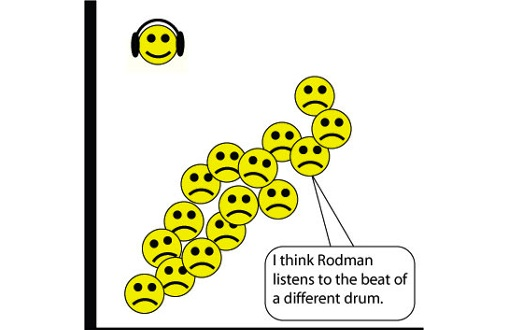
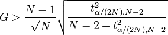

name: inverse layout: true class: left, top, inverse --- # Outliers --- ## Generative Model + "Real" model that produced original data points + Our mission is to reproduce the original model + Thus we have different techniques that can model different behavior ??? ## Questions + What is a "generative model"? + What is data mining trying to discover? What is machine learning hoping to reproduce? + Why have different classifiers? Decision tree, Naive Bayes, etc? --- ## Outliers + Significant deviation + Probably generated through a *different model* than the rest of the data + Normal / Abnormal .center[  ] ??? ## Intuitive + We all have a pretty good intuitive understand of what outliers are + Mathematically, you can express the variation as a different generative model + Normal / Abnormal data (be careful about using it in human contexts) + img: http://enriquegortiz.com/wordpress/enriquegortiz/research/undergraduate/ --- ## Outlier Types + Global + points which deviate from the rest of the *entire* data set - point anomalies + Contextual + points which deviate from their *peers* - conditional outliers + Collective + points which deviate as a *group*, even though individual points may not be considered outliers. --- ## Which Type? + Given class sizes at Berkeley: + A day with 10 people in class + A day with 7000 people in class + 3 weeks of 15 people in *this* class + Given Earth's temperatures: + A day at 100°C + 30 straight days of rain in Berkeley + A day at 100°F --- ## Types of Learning + Supervised + Unsupervised + Semi-Supervised <img src="img/ml-large-icon.png" width=100% /> ??? ## Types of Learning + Supervised: learning from "gold standard" labels + Unsupervised: learning without labels + Semi-Supervised: infer more labels from a few, learn based on inferred + labeled + img: https://www.coursera.org/course/ml --- ## Outlier Methods + Supervised + Label outliers, treat as classification problem + Unsupervised + Cluster data, find points not clustered well + Semi-Supervised + Manually label a few, find points nearby to automatically label, then treat as classification + Statistical + Decide on a generative model / distribution, find points which have a low probability of belonging + Proximity + Use relative distance to neighbors ??? ## Features + Some methods may be overlapping + When developing features for classification, using relative features can be helpful: e.g., distance from mean + e.g., Agglomerative clustering, find lone/small groups that are last to glom together + e.g. k-means find points which are "far" out from centroids + Determining "far", "last" can be application specific, part of the challenge + What algorithm could we use to automatically label nearby points? k-nearest neighbor + Statistical: Again, must define "low" in your domain + Proximity: basically translating features into another, relative space, then applying a different type of outlier detection (e.g., statistical) --- ## Statistical + Assume a distribution + Determine parameters + Calculate probability of a point be generated by distribution ??? ## Why Statistical + We've covered supervised and clustering, so let's skip to statistical methods + Most straight forward way is to use distributions --- ## Statistical Example + Assume a normal distribution + Determine mean and standard distribution + If ```(point-mean)/stddev > 3```, consider it an outlier <img src="img/gaussian-simple.png" width=85% /> ??? ## Pros/Cons + Straightforward + Can use % to intuitively motivate (3 stdevs is outside 99.7%) + But must manually determine cut-off + How do we know we got the parameters right? --- ## Grubb's Test + Takes into account sample size; reliability of mean/stddev measurements + Take Z-score of a point, assign to ```G``` + Student t-test: used to measure the distribution of *actual* mean from a sample .white-background[  ] ??? ## Pros/Cons + Z-score: ```abs(x-u)/s``` + This isn't actually *that* different from measuring stddev + But accounts for sample size, can express your confidence with alpha 95% (0.05) + Not going to go into t-test/t-distribution here, but basically it helps show where the mean likely is, given a set of sample data. --- ## Outlier Distance + How to find outliers in > 1 dimension? ??? ## Limitations + What are the limitations of the techniques we've seen? + Limited to one dimension! Taking mean, stddev, etc. applies to 1 dimension --- ## Outlier Distance + How to find outliers in > 1 dimension? + Translate distance to 1 dimension, find outliers + How to measure distance? ??? ## Limitations + Euclidean: doesn't take into account dependent variables --- ## Mahalanobis Distance + ```y``` depends somewhat on ```x``` + Euclidean distance measures all dimensions equally + Use *covariance matrix* to normalize distances in each dimension + Matrix in which ```E_i,j``` is the covariance of ```i```, ```j``` dimensions .center[ <img src="img/GaussianScatterPCA.png" width=60% /> ] ??? ## Mahalanobis + How to capture intuition that a distance along major axis is different than along this minor axis? + Expand this drawing into 3 dimensions + Euclidean distance will equally weight something that is out in the ```z``` direction as something that is along this primary scatter area --- ## Mahalanobis Definition + Find the mean vector + Normalize by covariance .white-background[ <img src="img/mahalanobis.png" width=100% /> ] ??? ## Some Math + Some extra math tricks to make the units work out: + We're taking the squared distance, then taking the square root + DM has *squared* Mahalanobis distance defined + What happens if we have no covariance? S is the Identity matrix --- ## Contextual Outliers + Typically reduce scope to context, use global techniques + Example: Calculate normal distribution for Berkeley weather + Collective outliers: find collections, use as context --- # *Break*